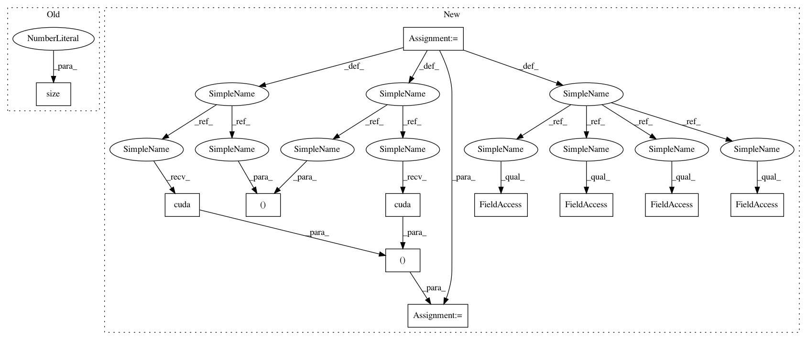

031392ff2cbb5703558d17a676a456521f754190,mnist/main.py,,train,#Any#,67
Before Change
loss = loss.data[0]
optimizer.step()
print("Epoch: {} [{}/{} ({:.0f}%)]\tLoss: {:.4f}".format(epoch,
i+BATCH_SIZE, training_data.size(0),
float(i+BATCH_SIZE)/training_data.size(0)*100, loss))
def test(epoch):
After Change
def train(epoch):
// create buffers for mini-batch
batch_data = torch.FloatTensor(opt.batchSize, 1, 28, 28)
batch_targets = torch.LongTensor(opt.batchSize)
if cuda:
batch_data, batch_targets = batch_data.cuda(), batch_targets.cuda()
// create autograd Variables over these buffers
batch_data, batch_targets = Variable(batch_data), Variable(batch_targets)
for i in range(0, training_data.size(0)-opt.batchSize+1, opt.batchSize):
start, end = i, i+opt.batchSize
optimizer.zero_grad()
batch_data.data[:] = training_data[start:end]
batch_targets.data[:] = training_labels[start:end]
output = model(batch_data)
In pattern: SUPERPATTERN
Frequency: 4
Non-data size: 11
Instances
Project Name: OpenNMT/OpenNMT-py
Commit Name: 031392ff2cbb5703558d17a676a456521f754190
Time: 2016-12-15
Author: soumith@fb.com
File Name: mnist/main.py
Class Name:
Method Name: train
Project Name: pytorch/examples
Commit Name: 031392ff2cbb5703558d17a676a456521f754190
Time: 2016-12-15
Author: soumith@fb.com
File Name: mnist/main.py
Class Name:
Method Name: test
Project Name: OpenNMT/OpenNMT-py
Commit Name: 031392ff2cbb5703558d17a676a456521f754190
Time: 2016-12-15
Author: soumith@fb.com
File Name: mnist/main.py
Class Name:
Method Name: train